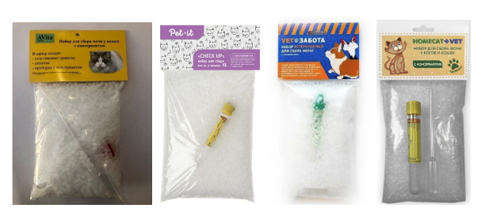

Как собрать анализ мочи
Главные задачи:
- Анализ нужно собрать ещё тёплым и хранить в холодильнике.
- Лоток должен быть чистый, без обычного наполнителя и без химии.
- Анализ должен оказаться у лаборанта как можно скорее.
Лоток
Отмываем лоток с мылом, потом тщательно ополаскиваем водой и протираем спиртом или ошпариваем
кипятком.
Наполнитель
Наполнитель можно использовать только специальный для сбора мочи. Есть коты, которые согласны сходить
в пустой лоток, но их мало. В любом зоомагазине продаются специальные наборы для сбора анализа, фирм
и вариантов много.
Примеры:

Другие варианты, как обмануть кота
Бывают коты, которые отказываются ходить не только в пустой лоток, но и в специальный наполнитель.
Тогда нужно применять фантазию. Ниже перечислены опробованные варианты:
- Мелко порезанные коктейльные трубочки. Почему-то некоторым котам это нравится больше, чем
пластиковый наполнитель.
- Пелёнка. Если ваш кот — любитель тряпочек, можно положить в чистый лоток пелёнку и отжать её
после того, как кот пописает. Или просто положить пелёнку на место лотка.
- Сетка. Если пустой лоток коту не нравится, то сетка на нём может оказаться приемлемой. Особенно
если на неё положить пару бумажек.
- Дополнительная миска с наполнителем. Берём среднего размера глубокую тарелку или миску, насыпаем
туда привычный наполнитель и ставим с той стороны лотка, где кот обычно гребёт передними лапами.
На обычное место ставим чистый лоток или лоток со специальным наполнителем.
- Глянцевый журнал. Рвём обложку от глянцевого журнала и кладём в лоток. Тонкие страницы или
газету использовать нельзя, так как они моментально размокнут. Обложка хорошо держит, но нужно
очень быстро собрать анализ, чтобы чернила обложки не успели прореагировать с мочой и не
повлияли на результат исследования.
- Баночка. Подставить под писающего кота чистый резервуар. Подходит для не нервных и не
стеснительных котов.
- Если всё бесполезно, то анализ всегда можно взять прямо в клинике методом прокола через брюшную
стенку под контролем УЗИ. Процедура не болезненная, но котам страшно, поэтому это крайний
случай. Плюс такой процедуры в том, что анализ будет максимально стерильным и его сразу можно
сдать на бактериальный посев.
Количество
Для полноценного анализа надо сдать 8 мл. Минимальный объём надо уточнять в вашей клинике, он
может различаться от лаборатории к лаборатории. Если кот за раз выдаёт количество меньше
минимального, то это повод не ждать, когда пописает большим объёмом, а собрать что есть, хватать
кота и нести на УЗИ вместе с анализом. Или просто хватать кота и нести в клинику, анализ можно
взять и там. Если кот вообще не может пописать или делает это по капле, то его надо ЭКСТРЕННО
везти в клинику!
О свежести
Анализ надо собрать ещё тёплым и положить в холодильник.
При этом основная проблема в том, что в обычной ситуации анализ должен попасть к лаборанту не
позже чем через 2 часа после того, как кот отчитается, а это непросто, так как кот обычно не
хочет подстраиваться под время работы лаборатории.
Если вдруг совпало, то можно набрать анализ в пробирку, продающуюся в человеческих аптеках или
прилагающуюся к спец. наполнителю, или в стерильный шприц 10 мл и сразу отнести.
В идеале нужно собирать утренний анализ, но лучше вы соберёте вечерний, чем никакого.
Спец. пробирки
Подходит только для ОАМ (общего анализа мочи), такие пробирки во многих клиниках не берут для
анализов на соотношение белок/креатинин! Анализ на соотношение белок/креатинин сдаётся в обычной
пробирке или в стерильном шприце, но зато может дольше храниться в холодильнике.
Есть решение этой проблемы — пробирки для длительного хранения мочи с консервантом. Спросите в
вашей клинике, в каких пробирках они принимают анализ. Некоторые не берут вариант с борной
кислотой. В них анализ хранится до 2 суток, так что можно собрать, положить в холодильник и
отнести в лабораторию в удобное время. Цена вопроса около 100 рублей.
Ниже фото одного из вариантов пробирки для длительного хранения мочи. Моча туда заливается через
шприц. То есть шприцем без иглы набираем из лотка, а потом надеваем иглу и заливаем в пробирку,
протыкая резиновую пробку иглой. Взболтать и в холодильник.

К сожалению, эти пробирки купить сложно, они не везде есть, чаще всего их можно найти не в
магазинах, а в вет. аптеках при клиниках. Но есть большая радость: стали появляться наборы для
сбора мочи, где к спец. наполнителю прилагается сразу именно такая пробирка.
Производители:
- Авита-групп
- Pet-it
- VetЗабота
- HOMECAT VET

Ссылки, где можно купить пробирки:
Одна и та же лаборатория
В разных лабораториях стоят разные анализаторы, а некоторые показатели типа количества кристаллов в
образце измеряются на глаз, и в разных лабораториях довольно сильно отличаются представления, что
такое один "плюс". Из-за этой разницы рекомендую носить анализы в одну и ту же лабораторию, только
так можно по-настоящему следить за развитием событий.
Как поймать
В идеале нужно собирать утренний анализ, но лучше вы соберёте вечерний, чем никакого.
Здоровый кот посещает лоток около трёх раз в день, это означает, что целые сутки следить не придётся.
Также у взрослых котов часто есть привычка ходить по малым делам примерно в одно и то же время.
Например, утром после завтрака, вечером после игры и т. п. Начните обращать внимание на связи — и
поймать анализ станет намного проще. В некоторых случаях кота можно попробовать спровоцировать
сделать дело в более удобное вам время. Например, если у него есть связка "побегал за верёвочкой —
пошёл в лоток".
Если в доме больше одного кота
Если в доме не один кот, то некоторым кажется, что сбор анализа становится слишком сложной задачей.
Поверьте мне, всё не так страшно. Да, придётся выделить день, когда вы следите за лотками.
Но следить надо и когда кот только один, так как собрать анализ надо ещё тёплым. Те, кому сложно
сидеть часами в засаде с книжкой или ноутом, могут купить камеру наблюдения ;)
У нас в квартире четыре кота, и сдаём мы анализы мочи всей команде раз в три месяца. Поверьте мне,
это совсем не сложно, главное приноровиться.
Если анализ сдал не тот кот, то выливаем и ждём дальше.
Не надо запирать "пациента" в отдельное помещение. Новое место + лоток с непривычным содержимым =
стресс. А когда коты нервничают, они начинают терпеть. И анализа нет, и коту плохо, а в худшем
случае дело может кончиться пописом в неожиданном месте.
Зачем нужен анализ мочи?
Общий клинический анализ мочи входит в обязательный набор анализов при ежегодной диспансеризации.
Особенно он хорош тем, что для его сдачи не надо везти кота к врачу.
Рекомендую сначала получить результаты этого анализа, а потом уже везти кота к ветеринару, так как
этот анализ даёт много информации о состоянии кота и может подсказать врачу, на что дополнительно
обратить внимание во время осмотра и нужны ли дополнительные обследования.
Для котов, склонных к циститам, мочекаменной болезни и болезням почек, этот анализ бесценен.
Анализ мочи нужно начинать ежегодно сдавать, когда коту исполнится один год, так как именно в этом
возрасте начинает проявляться склонность к мочекаменной болезни.
Если по результатам анализа мочи и внешним проявлениям у кота всё отлично, то одного раза в год
достаточно. Если есть проблемы, то периодичность определяет врач, обычно контроль назначают раз в
три месяца.
Расшифровка результатов анализа мочи
По ссылке можно почитать о значении показателей и более
подробную информацию о том, зачем нужен сам анализ
Про мочекаменную болезнь
Когда-то я была наивна и считала, что мочекаменная болезнь бывает только у старых кастрированных
котов. Поверьте моему печальному опыту, это совсем не так. Просто одним зверям везёт с шириной
уретры и у них не происходит закупорки, а другим, как было с нашим Греем, не везёт. На начальных
стадиях эта проблема легко купируется диетой. А рассказ о том, какие развлечения ждут "удачливого"
хозяина, если момент упущен, достоен отдельной песни.
У нашего Фурье тоже есть склонность, но ему повезло, так как мы уже умные и контролируем ситуацию.
Кошки так же, как и коты, склонны к мочекаменной, но в силу иного устройства уретры закупорки у них
бывают редко. Но поверьте, неприятные ощущения им тоже обеспечены, так что их нужно проверять точно
так же, как и котов.
Про почечную недостаточность
Печальный факт в том, что большинство котов обоих полов, особенно с возрастом, имеют склонность к
этой проблеме. Внешние проявления типа потери аппетита и изменений показателей крови, к сожалению,
проявляются только на последних стадиях, когда уже почти ничего нельзя сделать. А вот благодаря
своевременному анализу мочи и УЗИ проблему можно поймать в самом начале, и тогда правильно
подобранная диета даст коту шанс прожить с удовольствием долгие годы.